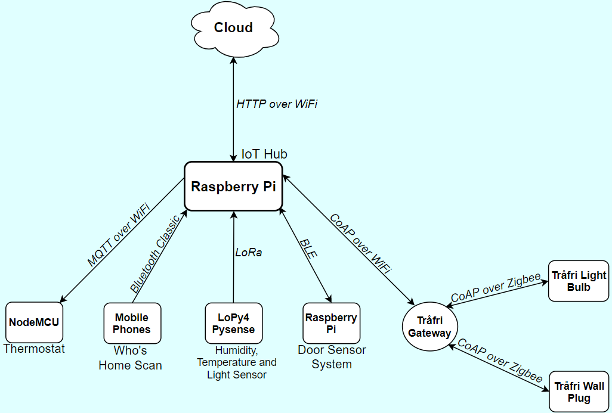

This is a System Overview. Please hover over a element to find out more information about that element.
Network Architecture

Cloud Level
Google Cloud Platform
The Google Cloud Platform enables sensor infomation to be stored externally to the user's Google Drive.
Edge Level
IoT Hub
The IoT Hub is a edge-based IoT gateway for a star network topology, communicating to a range of devices over various communication
protocols which provide home-automation functionality.
Device Level
NodeMCU Thermostat
The NodeMCU simulates the control of a thermostat by turning a LED on or off, this device communicates through MQTT over WiFi.
Who's Home Scan
A Bluetooth Classic MAC address scan searches of all known devices and determines that person is home if their device is within proximity.
LoPy4 Pysense Multi-Sensor
The LoPy4 communicates over LoRa, transmitting the current temperature, humidity and ambient light values read from the interfaced Pysense.
Raspberry Pi Door Sensor System
This device transmits through BLE the state information for the PIR sensor and reed switch, which acts as a proximity sensor and door open or closed sensor respectively.
Trådfri Gateway
The IoT Hub communicates to the Trådfri Gateway through CoAP over WiFi, through which it is able to control the connected Trådfri Light Bulb and Wall Plug.
The Trådfri Gateway communicates the IoT Hub commands to the connected Trådfri devices through Zigbee.